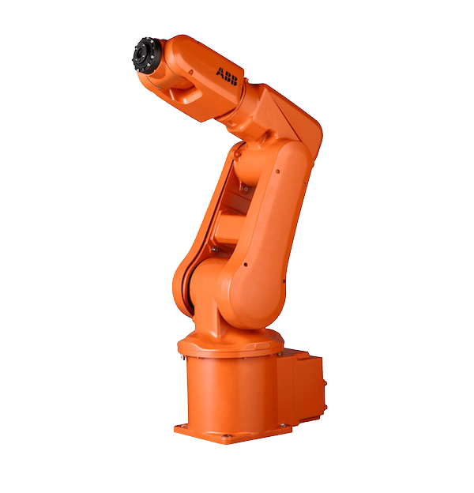

Height-Based Object Sorting
PLC-based conveyor sorting system using height sensors and Factory I/O simulation.

Water Tank Automation
Tank filling system with PLC timers and Ignition SCADA interface.

Obstacle Detection & Distance Monitoring
Ultrasonic sensor project using Arduino to detect object distance in real-time.

Smart Robot Car 4.0
Bluetooth-enabled smart car with obstacle detection and mobile control.

Bluetooth-Controlled DC Motor with LCD
Motor control using MSP430 and Bluetooth module, with speed display on LCD.

Beverage Filling Automation
Automated bottling system using timers and sensors for filling and discharge.

Pick-and-Place Robot – ABB
Simulated robot cell using ABB RobotStudio for pick-and-place task programming.